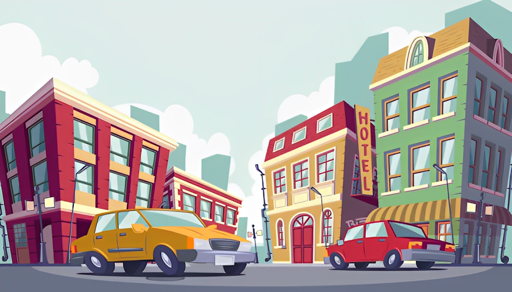
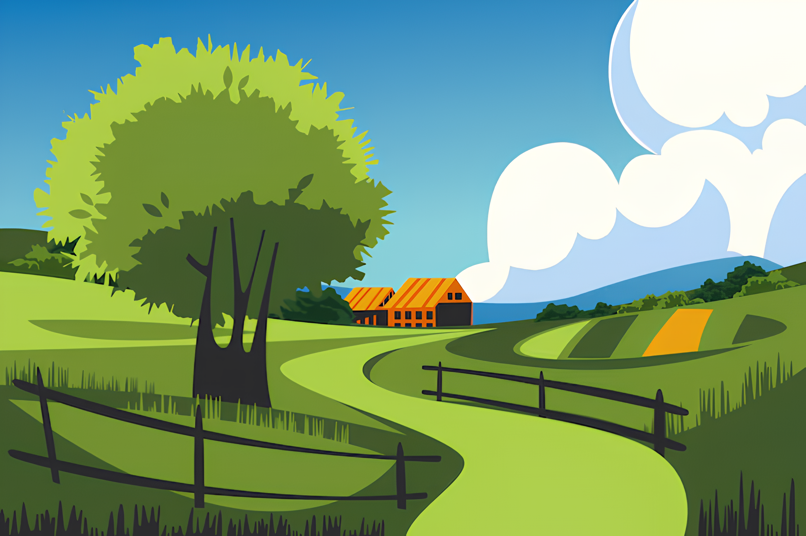

Visitas à Área Rural-Urbana
Rurais na Cidade:
Moradores rurais visitam empresas, centros culturais e instituições urbanas para aprender sobre tecnologias e oportunidades de negócios. Isso facilita a adaptação de inovações tecnológicas e a formação de parcerias.
Urbanos no Campo:
Cidadãos urbanos visitam fazendas e cooperativas para vivenciar a realidade agrícola, aprendendo sobre práticas sustentáveis e a origem dos alimentos. Isso aumenta o respeito pelo trabalho rural e inspira práticas sustentáveis.
